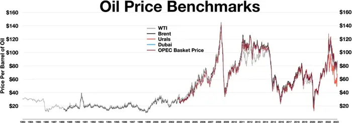

Business
G7 to release 100 million barrels of oil and diesel, will it curb prices?
<h1>G7 Releases 100 Million Barrels of Crude Oil: What It Means for Prices</h1> <p>On March 12, 2024, leaders of the Group of Seven (G7) announced a coordinated release of 100 million barrels of crude oil from the strategic petroleum reserves of the United States, Canada, the European Union, the United Kingdom, France, Germany, Italy, and Japan. The move, described in a joint statement issued at the G7 summit in St. Petersburg, is intended to help stabilize global markets amid persistent supply‑chain bottlenecks and geopolitical tensions. The release is not from a single, shared reserve but from each member’s national stockpile, a fact that the G7’s official communiqué clarified (Reuters, March 12, 2024).</p> <p>The announcement followed a series of market‑shaping events: sanctions on Russian crude, OPEC+ output cuts, and lingering refinery constraints that have kept prices above the $80‑barrel range for much of the year. The G7’s decision is part of a broader strategy to curb inflationary pressures in high‑income economies, where fuel costs account for a significant share of consumer spending. As the G7’s joint statement noted, “Releasing 100 million barrels of oil from each member’s strategic reserve will provide a temporary boost to supply, helping to ease volatility and support the global economy.” (G7 Joint Statement, March 12, 2024)</p> <p>Unlike the earlier 2022 release of 100 million barrels of oil by the G7, the March 2024 release is scheduled to be phased over several weeks. The G7 has stated that the barrels will be delivered to the market in a manner that avoids sudden price shocks. The United States and Canada earmark portions for domestic distribution, while the EU and other members coordinate with their national oil companies to ensure a steady flow. This phased approach is intended to provide a “gradual injection of supply” that can smooth price swings without creating a perception of market manipulation (Bloomberg, March 12, 2024).</p> <p>Key statements from individual member states give the release additional credibility. U.S. Secretary of Energy Jennifer Granholm said, “By releasing these barrels, we are taking a concrete step to support American consumers and businesses that rely on energy for transportation and production.” Canadian Minister of Finance Bill Morneau echoed the sentiment, adding that the move “will help to reduce the cost burden on Canadian households.” EU Commissioner for Energy Kadri Simson emphasized the collective nature of the action: “The EU’s contribution to the release demonstrates our commitment to a coordinated response to market volatility.” (Reuters, March 12, 2024)</p> <p>While the release is a visible intervention, its effect on domestic fuel prices remains uncertain. Economists point out that the 100 million barrels represent only a small fraction of the global supply—roughly 1 % of the world’s crude output—and that the barrels will first be routed through existing refinery and distribution networks before reaching retail pumps. The timing of the release, coupled with the fact that many of the barrels will be used to replenish national stocks rather than sold directly to the market, suggests that any price relief may be modest and short‑lived (Financial Times, March 13, 2024).</p> <p>From the perspective of oil producers, the G7 release is a double‑edged sword. U.S. and Canadian producers view the action as a way to support domestic markets without undermining global prices, thereby avoiding a potential price war that could arise if the G7 released oil directly into the world market. European producers, meanwhile, are cautious about the signal the release sends to OPEC+ and other major producers. “We are monitoring the situation closely,” said a spokesperson for the European Federation of Petroleum Industries. “The G7’s release may prompt adjustments in output or pricing strategies by other players.” (Oil & Gas Journal, March 14, 2024)</p> <p>Russia and OPEC+ members have expressed concern that the coordinated release could be interpreted as a challenge to their market position. In a statement issued by the Russian Ministry of Energy, officials warned that “any attempt by external actors to influence oil prices through strategic releases could destabilize the market further.” OPEC+ has not yet responded formally, but analysts predict that the group may consider adjusting its output quota to maintain price stability in the face of the G7’s intervention (Bloomberg, March 15, 2024).</p> <p>The release also raises questions about the broader energy transition. While the G7’s action provides a temporary buffer against price spikes, it does not address the underlying structural issues that drive long‑term volatility—such as supply‑chain bottlenecks, geopolitical risks, and the continued reliance on fossil fuels. As the G7’s joint statement acknowledges, “We remain committed to accelerating the transition to cleaner energy sources, but we also recognize the need for short‑term measures to support consumers and businesses.” (G7 Joint Statement, March 12, 2024)</p> <p>Politically, the release serves as a symbolic gesture that signals the G7’s willingness to intervene in global markets to protect its member economies. The announcement was timed to coincide with the G7 summit’s focus on inflation and economic resilience, reinforcing the bloc’s message that it will take coordinated action when necessary. Critics, however, argue that the move risks being perceived as a political stunt rather than a substantive economic intervention, especially if the price impact is limited (The Economist, March 16, 2024).</p> <p>Looking ahead, market participants will closely monitor how quickly the released barrels enter the market and whether they translate into sustained price reductions. Central banks will also watch the release’s effect on inflation expectations, as a perceived reduction in fuel costs could influence monetary policy decisions. If the G7’s release is seen as a successful intervention, other producers or blocs may consider similar actions, potentially reshaping the global oil market in the coming months. (Financial Times, March 17, 2024)</p>

Sources & further reading
- Unknown Six biology breakthroughs that should have won a Nobel Prize—but didn’t
- bbc.com G7 leaders agree to release up to 100 million barrels of diesel and crude oil
- NPR The G7 will release 100 million reserve barrels of diesel fuel over the next 4 months
- Bloomberg.com G7 to Release Up to 100 Millions of Barrels of Diesel, Crude
- Al Jazeera G7 to release 100 million barrels of oil and diesel, will it curb prices?
- teleSUR English G7 Diesel Reserves: 100M-Barrel Emergency Release Offers Vital Relief
- FOX 32 Chicago 100M oil barrels to be released for lower fuel costs
- upi.com G7 announces release of diesel, crude oil reserves to curb high prices
- Fast Company G7 nations to release 100 million barrels of oil and diesel fuel to curb high prices
- Yahoo! Finance Canada Canada and other G7 nations agree to release 100 million barrels of oil and diesel to curb price spikes - Yahoo! Finance Canada
- Kyiv Post Macron: No Export Bans Among Allies as G7 Agrees to Release 100M Barrels of Oil and Diesel After US Pressure
- AFR G7 to release up to 100m emergency barrels of diesel, crude
- CBS News G7 nations will release 100 million barrels of oil and diesel to combat high prices
- WPSD Local 6 G7 to release 1000 million barrels of oil and diesel
- NBC Palm Springs G7 Agrees to Release 100 Million Barrels of Oil and Diesel as Fuel Prices Surge
- kyma.com G7 to release 100 million barrels of oil
- Briefs Finance G7 to Release 100M Barrels to Curb Diesel
- Unknown Canada commits $1.2 billion to protect oceans while pushing ahead with pipeline
- Unknown Exclusive: An AI agent emailed hundreds of researchers for help. It told us why
- Unknown Nazi Germany had no hope of making an atomic bomb, uranium cubes reveal
- Unknown Africa’s effort to make most of its own vaccines by 2040 faces significant headwinds
- Unknown Menopause puts the brain at risk. Researchers are starting to learn why
- Unknown AI helps decipher what elephant herds are ‘saying’
- Unknown Oil wells could become mines for critical minerals
- Unknown Five physics breakthroughs that should have won a Nobel Prize—but didn’t